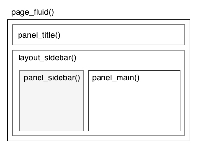

Recently, RStudio (soon-to-be-renamed, Posit) announced they’re alpha testing an extension of Shiny to Python!
So to learn, I created a prototype for spaCy using Shiny for Python, see my GitHub repo for spacy-shiny.
In this post, I want to briefly describe the basics of the app. I’ll reference some of the documentation used on the Shiny for Python documentation.
Shiny for Python is still in its alpha testing. It could (and very likely will) change API aspects in the future. Be sure to keep an eye the Shiny for Python website for up-to-date documentation and news about the project.
What makes up a Shiny app?
Shiny apps have two major parts that make up an app:
- the UI (user-interface)
- the Server function
Here’s a generic Shiny app for Python:
from shiny import App, ui
# Part 1: ui ----
app_ui = ui.page_fluid(
"Hello, world!",
)
# Part 2: server ----
def server(input, output, session):
...
# Combine into a shiny app.
# Note that the variable must be "app".
app = App(app_ui, server)To run this file, we’ll need to call from shiny import App, ui. And then to create the app itself, we’ll combine the ui app_ui along with the server function into App(). Easy so far, right?
Basics of our spaCy app: Server Side
To describe my spaCy app (see code here), let’s work backwards, starting with the server function first.
def server(input, output, session):
@output
@render.text
@reactive.event(input.run) # Take a dependency on the button
def result():
doc, nlp = process_text(input.spacy_model(), input.text())
...The first line is defining the name and arguments for the server() function. The next line (@output) is a decorator that indicates that the result will be displayed in the UI. Last, the @reactive.event(input.run) means that this function will be a dependent event on some input we’re calling run input.run. We’ll explain this in just a second.
We’ll next define a function result(), which will result our main server action. The function will call process_text(), which is a combination of two helper functions:
def load_model(name):
return spacy.load(name)
def process_text(model_name, text):
nlp = load_model(model_name)
return nlp(text), nlpThis should be familiar if you’ve used spacy before to load models before. Notice that for process_text(), we also included a second argument for the text. This is what we’ll want to revisit in our user interface as this will become reactive based on the user’s input.
Also, we’ll fill in the ... with five additional lines of code, providing how to handle different spaCy components in our server. Notice the logic will look whether our spaCy pipeline has either "parser" and/or "ner" components and then render the html for each respective component using our input text (input.text()). We then concatenate the html for each part and that is what our server will return.
def server(input, output, session):
@output
@render.text
@reactive.event(input.run) # Take a dependency on the button
def result():
doc, nlp = process_text(input.spacy_model(), input.text())
if "parser" in nlp.pipe_names:
html_parser = get_parser(doc, nlp)
if "ner" in nlp.pipe_names:
html_ner = get_ner(doc, nlp)
return html_parser + html_nerTo define how we get our html outputs, we’ll provide two additional helper functions in our app.py where we specify what we want to extract from the doc object for either ner or our parser tagging. The key is we want to use displacy, spaCy’s nifty visualizer to render either part-of-speech or named entities into the user interface. So to use either, we want to use display.render().
HTML_WRAPPER = """<div style="overflow-x: auto; border: 1px solid #e6e9ef; border-radius: 0.25rem; padding: 1rem; margin-bottom: 2.5rem">{}</div>"""
def get_parser(doc, nlp):
options = {
"collapse_punct": True,
"collapse_phrases": True,
"compact": True,
}
docs = [span.as_doc() for span in doc.sents] if True else [doc]
for sent in docs:
html = displacy.render(sent, style="dep", options=options)
html = html.replace("\n\n", "\n")
html = HTML_WRAPPER.format(html)
return htmlIf our spaCy pipeline has a part-of-speech (pos) component, we first can separate the document as sentences by using a list comprehension. We do this because displaCy will display pos tags from left to right, and if we have mulitiple sentences than we’ll need to scroll. By doing this, we’ll stack each pos visualizer vertically, one for each sentence.
We’ll then loop through each sentence, inputting it into displacy.render(), adding an additional new line (\n) to improve the cosmetic look with extra vertical space, then format our html output. Notice that for displacy.render() we included the argument style="dep" to indicate that we were using the dependency parsing.
Alternatively for ner, we only need to provide the possible labels as an additional argument for display.render, which we can get from nlp.get_pipe("ner").labels. We do need to specify that our style is "ent" as we’re interested in visualizing the entities. Then we do a similar trick to add white space by replacing blank lines with a new line character (\n) and then format the html with HTML_WRAPPER.format().
HTML_WRAPPER = """<div style="overflow-x: auto; border: 1px solid #e6e9ef; border-radius: 0.25rem; padding: 1rem; margin-bottom: 2.5rem">{}</div>"""
def get_ner(doc, nlp):
labels = nlp.get_pipe("ner").labels
html = displacy.render(doc, style="ent", options={"ents": labels})
html = html.replace("\n", " ")
html = HTML_WRAPPER.format(html)
return htmlBasics of our spaCy app: UI
We also have to provide details for the user interface on what to display for our app.
Shiny uses a nested layout design for its user interface that typically starts with a ui.page_fluid() function that represents the fluid page. YOu can include other components like the panel_title() for the panel’s title or parts within a sidebar layout.
app_ui = ui.page_fluid(
ui.panel_title(),
ui.layout_sidebar(
ui.panel_sidebar(
...
),
ui.panel_main(
...
),
),
)
What’s great about ui objects is that they are just functions that output html that will be rendered in the user interface.
For example, let’s say we want to see what the ui.page_fluid() function does. We can then run the function to see that it simply outputs html code to render the text.
from shiny import ui
ui.page_fluid("This is my page")
# <html>
# <head></head>
# <body>
# <div class="container-fluid">This is my page.</div>
# </body>
# </html>There are many other ui objects that you can create and can provide widgets for your user interface.
For our interface, we want to provide the user with three options.
First, the user can select their model they want to use.
Second, the user can input as a text box what is the text they want their respective model to analyze.
Last, since shiny implements [reactive programming], we will want to add a button that executes the model select to run on the text provided only when the user clicks a button.
To do this, we’ll use the documentation for the UI inputs and identify that we’ll want to use the three functions:
ui.input_select(): this will input which spaCy model we’ll useui.input_text_area(): this will input what text we want to process in spaCyui.input_action_button(): this will be an action button that we’ll execute our server function only when this button is selected.
SPACY_MODEL_NAMES = ["en_core_web_sm", "de_core_news_sm", "es_core_news_sm"]
DEFAULT_TEXT = "Tim Cook is the CEO of Apple."
app_ui = ui.page_fluid(
ui.layout_sidebar(
ui.panel_sidebar(
ui.input_select(id = "spacy_model", label = "Model name", choices = SPACY_MODEL_NAMES),
ui.input_text_area(id = "text", label = "Text to analyze", value = DEFAULT_TEXT),
ui.input_action_button("run", "Run doc!"),
),
ui.panel_main(
ui.output_ui("result", placeholder=True),
),
)
)As a last specification, we want to use the layout_sidebar() to include these three inputs in the sidebar of our user interface. We can list each of these three functions inside of the layout_sidebar() function. Last, it’s important to provide a unique id for each of our input functions. We need this as these unique id (names) will help us identify the values within the server side.
For example, recall that we named the reactive event in our server function @reactive.event(input.run). Notice that its input is input.run, the name of our input_action_button. Hence, this is how we can provide conditional logic for our reactive flow. We only run the result() function when the user will click the input.run button.
Last, our only missing element is that we need to specify where we are displaying our display output that returned from our server function. For this, we can use the ui.output_ui() within the ui.panel_main(), which is the main display view of the ui.layout_sidebar(). For the user interface to know what is going to be run, we use result as the first argument as this is the name of our function within the server-side of the app.
As a final step, we then combine our UI and server with one final line of code:
app = App(app_ui, server)We can run this app locally but what if we want others to view our app? We can deploy it.
Deployment
The app below is a deployed version of app (see the GitHub repo) on shinyapps.io. This is one of the fastest ways to deploy an app as this is a cloud service provided by Posit. It provides free and paid tiers depending on your use. For more details about preparing your app for deployment, check out the deployment docs.
With all of these details, we can now run our app!